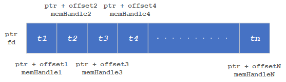

LPAI¶
Table of Contents.
- QNN LPAI Integration
QNN LPAI Memory Allocations
Troubleshooting for QNN LPAI Backends (x86 Simulator, ARM & aDSP)
API Specializations¶
This section contains information related to API specialization for the LPAI backend.
All QNN LPAI backend specializations are available under the <QNN_SDK_ROOT>/include/QNN/LPAI/ directory.
The current version of the QNN LPAI backend API is:
QNN LPAI Supported Operations¶
QNN LPAI supports running quantized 8-bit and quantized 16-bit networks on supported Qualcomm chipsets. A list of operations supported by the QNN LPAI runtime can be found under the Backend Support LPAI column in OpDef/SupportedOps:Supported Operations.
QNN LPAI Overview¶
LPAI (Low Power AI) is a programmable ML engine optimized for low-area, low-power applications. It is optimized for deeply embedded use cases such as:
Always-on voice use cases on mobile, XR or IoT platforms.
Voice and music use cases on IoT platforms
Voice AI use cases such as Automatic Speech Recognition (ASR), Speech Caption, and etc
Always-on camera use cases on mobile, XR or IoT platforms
Qualcomm Sensor hubs
This document provides a user-friendly guide to using the QNN LPAI backend for model generation, execution, result analysis and profiling.
QNN LPAI Quick Start Guide¶
Follow these steps to get started quickly:
QNN LPAI Setup & Configuration¶
Set up the environment variables
Set up your environment with the required SDK paths and configuration files. Use the following variables:
This includes setting paths to toolchains, libraries, and runtime binaries.
Key environment variables:
QNN_SDK_ROOT: Root directory of the QNN SDK installation.
PATH: Must include paths to QNN tools and binaries (e.g.,$QNN_SDK_ROOT/bin).
LD_LIBRARY_PATH(Linux only): Must include paths to required shared libraries (e.g.,$QNN_SDK_ROOT/lib).Important
Ensure the following environment variables are set before using offline tools:
Linux Example:
export QNN_SDK_ROOT=/path/to/qnn_sdk export PATH=$QNN_SDK_ROOT/bin/x86_64-linux-clang:$PATH export LD_LIBRARY_PATH=$QNN_SDK_ROOT/lib/x86_64-linux-clang:$LD_LIBRARY_PATHWindows Example (Command Prompt):
set QNN_SDK_ROOT=C:\path\to\qnn_sdk set PATH=%QNN_SDK_ROOT%\bin\x86_64-windows-msvc;%PATH%
Prepare the JSON configuration file
The configuration file defines both model generation and execution parameters for a specific LPAI hardware version.
The JSON file consists of two sections:
Model generation: Specifies how the model should be compiled for the target LPAI version.
Model execution: Defines runtime behavior, including memory allocation and device-specific settings.
Different Snapdragon platform may support different LPAI versions. Refer to the compatibility table at Supported Snapdragon Devices.
Create a configuration JSON file with model generation and execution parameters. Example:
{ "lpai_backend": { "target_env": "adsp", "enable_hw_ver": "v6" } }
For detailed instructions, see the QNN LPAI Backend Configuration Guide.
QNN LPAI Backend Configuration Guide¶
Overview¶
This document outlines the structure and usage of LPAI backend configuration files employed by QNN tools such as qnn-net-run and qnn-context-binary-generator.
These JSON-formatted files enable fine-grained control over model preparation, runtime behavior, debugging, profiling, and internal backend features.
There are two primary JSON configuration files:
Backend Extension Configuration File Specifies the path to the LPAI backend extension shared library and the path to the LPAI backend configuration file.
Example usage:
--config_file <path_to_backend_extension_JSON>Example format:
{ "backend_extensions" : { "shared_library_path" : "path_to_Lpai_extension_shared_library", "config_file_path" : "path_to_Lpai_extension_config_file" } }
LPAI Backend Configuration File Defines all configurable parameters for model generation and execution. This file is parsed by the LPAI backend extension library.
Configuration Schema¶
The configuration is organized into the following sections:
lpai_backend: Global backend settings.lpai_graph: Graph generation and execution parameters.lpai_profile: Profiling options (optional).lpai_debug: Debug options (optional).
Each section and its parameters are described below.
lpai_backend¶
target_env(string):Target environment for model execution.
Options:
arm,adsp,x86Default:adspenable_hw_ver(string):Hardware version of target refer to Supported Snapdragon Devices.
Options:
v5,v5_1,v6Default:v6
lpai_graph¶
executeUsed by
qnn-net-runduring runtime execution.fps(integer): Target frames per second. Default:1ftrt_ratio(integer): Frame-to-real-time ratio. Default:10client_type(string): Type of workload. Options:real_time,non_real_time. Default:real_timeaffinity(string): Core affinity policy. Options:soft,hard. Default:softcore_selection(integer): Specific core number. Default:0
lpai_profile (Optional)¶
level(string): Profiling level:basic,detailed. Default:basicLpai Profiling
lpai_debug (Optional)¶
force_nhwc(bool): Enforce NHWC tensor layout. Default:false
QNN LPAI Backend Configuration Parameters¶
Fps and ftrt_ratio information¶
These parameters define how a client configures its processing behavior for eNPU hardware.
- fps (Frames Per Second)
Specifies how frequently inference must be completed.
For example, fps = 10 means the system must process one frame every 100 milliseconds (i.e., 1000 ms / 10).
This sets the overall time budget for each frame, including pre-processing, inference, and post-processing.
- ftrt_ratio (Factor to Real-Time Ratio)
Determines the hardware configuration to meet the latency requirement for inference.
If pre- and post-processing take up most of the frame time (e.g., 80 ms out of 100 ms), only 20 ms remain for inference.
To ensure inference completes within this reduced time window, the eNPU must be boosted.
Setting ftrt_ratio = 50 applies a multiplication factor of 5.0 to the base clock frequency, helping the eNPU meet the tighter latency constraint.
- Default Values
fps = 1 (1 frame per second, allowing 1000 ms per frame)
ftrt_ratio = 10 (moderate clock scaling factor)
These defaults imply a relaxed processing schedule and a balanced performance-power tradeoff.
Realtime vs Non-Realtime client¶
Real-time: Indicates that the model is intended for real-time use cases, where a specific performance threshold must be met. If the required performance cannot be achieved, the finalize function will return an error.
Non-real-time: Refers to models without strict performance requirements. In these cases, LPAI will make a best-effort attempt to accommodate the workload, and finalize will not fail due to performance limitations.
Core Selection & Affinity¶
Clients can configure core selection and affinity settings for the eAI to control how their model’s offloaded operations (Ops) are assigned to processing cores.
If no settings are provided:
Core Selection defaults to
0x00(no specific preference — any available core may be selected).Affinity defaults to soft affinity.
Core Selection¶
coreSelectionis a bitmask that specifies which core(s) are eligible for selection.Each bit represents a core:
0x01→ selects core 00x02→ selects core 10x00→ no specific preference; any available core may be selected
Important
Mixed core selection (e.g.,
0x03to select both core 0 and core 1) is not yet supported.
Platform-Specific Guidance¶
For platforms with only one processing core, users should configure:
coreSelection = 0x00(no specific preference), orcoreSelection = 0x01(explicitly select core 0)
This ensures compatibility and avoids undefined behavior due to unsupported multi-core selection.
Important
The API does not expose core characteristics (e.g., whether a core is “big” or “small”).
Users should consult platform documentation to determine core capabilities and make informed decisions about core selection and affinity strategy.
Affinity Strategy¶
Hard Affinity: Forces Ops to run only on the selected core.
Soft Affinity: Prefers the selected core but allows fallback to another if the preferred is busy.
Guidance Based on Core Behavior¶
Scenario |
Recommended coreSelection |
Affinity Type |
Rationale |
|---|---|---|---|
Heavy compute workloads (e.g., large convNets) |
|
Hard or Soft |
Core 1 is typically a big core, offering better performance |
Audio use cases |
|
Soft |
Core 0 (small core) is sufficient and more power-efficient |
Camera use cases |
|
Soft |
Core 1 provides faster inference for image processing |
Shared workloads (audio + camera) |
|
Soft |
Allows dynamic load balancing across cores |
Power-sensitive applications |
|
Soft |
Core 0 consumes less power |
Performance-critical apps |
|
Hard |
Ensures consistent execution on the high-performance core |
System-Level Considerations¶
Core affinity should be tuned based on:
System concurrency
Workload characteristics
KPI targets
Power budget
Profiling results
Core shutdown is not required: Idle cores are automatically power collapsed, ensuring efficient power management.
Runtime Layout Control in LPAI¶
Purpose¶
The force_nhwc option is a runtime configuration setting used in Qualcomm’s LPAI (Low Power AI) backend to enforce NHWC tensor layout during model execution.
Its primary role is to help avoid automatic layout transformations—specifically TRANSPOSE operations—around convolutional layers, which can negatively impact performance and profiling clarity.
Why It Matters¶
When executing models on the eNPU, layout transformations often appear around operations like Conv2D, especially at graph boundaries.
These transformations are inserted to reconcile differences between the model’s tensor layout (e.g., NHWC) and the eNPU’s internal hardware-native layout, which is typically blocked or tiled.
Even if a model is converted with NHWC input/output layouts and no output layout is explicitly forced, the runtime may still insert TRANSPOSE operations unless force_nhwc is enabled.
These transformations can dominate execution time on the DSP and obscure the performance of the actual accelerated operation.
Recommended Usage¶
To minimize or eliminate layout transformations at graph boundaries:
Set input and output tensor layouts to NHWC during model conversion.
Enable
force_nhwcin the runtime configuration. This instructs the runtime to preserve NHWC layout and avoid inserting layout transforms.Avoid forcing output layout during conversion, which can trigger post-processing transforms.
Limitations¶
If
force_nhwcis not enabled, layout transforms will likely appear even if the graph is NHWC.For single operations at graph boundaries, layout transforms may still occur due to the eNPU’s internal layout requirements.
To fully avoid layout transforms, it is often necessary to chain multiple eNPU-compatible operations, allowing the internal layout to be reused across ops without conversion.
Summary¶
force_nhwc is a critical setting for developers aiming to optimize LPAI model execution and profiling.
It ensures that NHWC layouts are respected at runtime, reducing overhead and improving clarity in performance analysis.
However, due to hardware constraints, some layout transforms may still be unavoidable unless multiple operations are chained together.
Full JSON Scheme¶
Below is a complete scheme of the LPAI backend configuration file with all supported parameters:
{
"lpai_backend": {
// Selection of targets [options: arm/adsp/x86] [default: adsp] (Simulator or target)
// Used by qnn-context-binary-generator during offline generation
"target_env": "adsp",
// Corresponds to the LPAI hardware version [options: v5/v5_1/v6] [default: v6]
// Used by qnn-context-binary-generator during offline generation
"enable_hw_ver": "v6"
},
"lpai_graph": {
"execute": {
// Specify the fps rate number, used for clock voting [options: number] [default: 1]
// Used by qnn-net-run during execution
"fps": {"type": "integer"},
// Specify the ftrt_ratio number [options: number] [default: 10]
// Used by qnn-net-run during execution
"ftrt_ratio": {"type": "integer"},
// Definition of client type [options: real_time/non_real_time] [default: real_time]
// Used by qnn-net-run during execution
"client_type": {"type": "string"},
// Definition of affinity type [options: soft/hard] [default: soft]
// Used by qnn-net-run during execution
"affinity": {"type": "string"},
// Specify the core number [options: number] [default: 0]
// Used by qnn-net-run during execution
"core_selection": {"type": "integer"}
}
}
}
Full JSON Example¶
Below is a complete example of the LPAI backend configuration file with all supported parameters:
{
"lpai_backend": {
"target_env": "adsp",
"enable_hw_ver": "v6"
},
"lpai_graph": {
"execute": {
"fps": 1,
"ftrt_ratio": 10,
"client_type": "real_time",
"affinity": "soft",
}
}
}
Best Practices¶
Minimal Changes: Use default values unless specific tuning is required.
Validation: Ensure all values conform to expected types and allowed options.
Version Compatibility: Refer to the Supported Snapdragon Devices for supported LPAI versions.
QNN LPAI Model Generation¶
Model generation relies on three existing QNN (not QAIRT) tools:
QNN Model converter Tool responsible for model conversion and quantization to QNN format refer to QNN Converters.
QNN Model Lib Generator responsible for model compilation to shared library format qnn-model-lib-generator.
QNN Context Binary Generator is used for offline model compilation qnn-context-binary-generator.
With the configuration file prepared, you can now generate the model offline. This step compiles the neural network into a format optimized for the target LPAI hardware.
Important
The LPAI backend requires quantized QNN models. Unquantized QNN models are not supported.
For supported operations and quantization requirements, refer to the Supported Operations.
Offline LPAI Model Generation illustrates the LPAI offline model generation.
Offline LPAI Model Generation

Quantization Method Comparison¶
Method |
Command Line |
Purpose |
Key Options & Descriptions |
|---|---|---|---|
CPU-Based Quantization |
|
Generate activation distribution and quantize tensors using CPU. |
|
JSON-Based Quantization (e.g., AIMET) |
|
Use external tool (e.g., AIMET) to define quantization via JSON overrides. |
|
Note
--use_dynamic_16_bit_weights is enabled by default when using --target_backend LPAI.
Recommendations¶
Scenario |
Recommended Workflow |
Rationale |
|---|---|---|
Quick prototyping or baseline quantization |
CPU-Based Quantization |
Fast setup with default options; no need for external tools. |
Fine-grained control over quantization behavior |
JSON-Based Quantization |
Allows detailed overrides via JSON (e.g., AIMET), ideal for achieving better quantization accuracy with advanced quantization algorithms. |
Working with pre-calibrated models or external calibration tools |
JSON-Based Quantization |
Integrates well with external calibration data and overrides. |
Quantization Tips¶
Use
--use_per_channel_quantizationfor convolution layers to improve accuracy.Use
--use_per_row_quantizationfor Matmul/FC layers to reduce quantization error.Prefer symmetric quantization for hardware-friendly deployment.
Use
--keep_weights_quantizedand--float_fallbackcombination to make sure quantization behavior specified in the quantization overrides is retained.
Preparing LPAI Param Config File¶
Prepare Json file with appropriate parameters to generate model for appropriate hardware
EXAMPLE of lpaiParams.conf file for v6 hardware:
{
"lpai_backend": {
"target_env": "x86",
"enable_hw_ver": "v6"
}
}
Compile LPAI Graph on x86 Linux OS¶
EXAMPLE of config.json file:
{
"backend_extensions": {
"shared_library_path": "${QNN_SDK_ROOT}/lib/x86_64-linux-clang/libQnnLpaiNetRunExtensions.so",
"config_file_path": "./lpaiParams.conf"
}
}
Use context binary generator to generate offline LPAI model.
The qnn-context-binary-generator utility is backend-agnostic, meaning it can only utilize generic QNN APIs. The backend extension feature allows for the use of backend-specific APIs, such as custom configurations. More documentation on context binary generator can be found under qnn-context-binary-generator Please note that the scope of QNN backend extensions is limited to qnn-context-binary-generator and qnn-net-run.
LPAI Backend Extensions serve as an interface to offer custom options to the LPAI Backend.
To enable hardware versions, it is necessary to provide an extension shared library
libQnnLpaiNetRunExtensions.so and a configuration file, if required.
To use backend extension-related parameters with qnn-net-run and qnn-context-binary-generator, use the --config_file argument and provide the path to the JSON file.
$ cd ${QNN_SDK_ROOT}/examples/QNN/converter/models
$ export LD_LIBRARY_PATH=$LD_LIBRARY_PATH:${QNN_SDK_ROOT}/lib/x86_64-linux-clang
$ ${QNN_SDK_ROOT}/bin/x86_64-linux-clang/qnn-context-binary-generator \
--backend <path_to_x86_library>/libQnnLpai.so \
--model <qnn_x86_model_name.so> \
--log_level verbose \
--binary_file <qnn_model_name.bin> \
--config_file <path to JSON of backend extensions>
To configure LPAI JSON configuration refer to QNN LPAI Backend Configuration Guide
Compile LPAI Graph on x86 Windows OS¶
EXAMPLE of config.json file:
{
"backend_extensions": {
"shared_library_path": "${QNN_SDK_ROOT}/lib/x86_64-windows-msvc/QnnLpaiNetRunExtensions.dll",
"config_file_path": "./lpaiParams.conf"
}
}
Note
The lpaiParams.conf should be created in a manner similar to that used for Linux operating systems.
Use the context binary generator to generate an offline LPAI model. More documentation on the context binary generator can be found under qnn-context-binary-generator.
Generate the Context Binary:
cd ${QNN_SDK_ROOT}/examples/QNN/converter/models
$env:PATH=$PATH:"${QNN_SDK_ROOT}/lib/x86_64-windows-msvc:${QNN_SDK_ROOT}/bin/x86_64-windows-msvc"
qnn-context-binary-generator.exe `
--backend ${QNN_SDK_ROOT}/lib/x86_64-windows-msvc/QnnLpai.dll `
--model ${QNN_SDK_ROOT}/examples/Models/InceptionV3/model_libs/x86_64-windows-msvc/QnnModel.dll `
--config_file <config.json> `
--binary_file qnn_model_8bit_quantized.serialized
QNN LPAI Execution¶
Transfer model and input files to the target device
Set up a dedicated test directory on the target device or x86 host (for simulation). Copy the following into this directory:
The compiled model binary
Input data files
A predefined input_list file (for QNN-NET-RUN)
Ensure that all required QNN and LPAI runtime components are included based on the target platform Execute model using qnn-net-run to learn more about necessary components for every configuration.
Execute the model using qnn-net-run on test platform (simulator or target device)
Execute the model on supported platforms (x86, ARM, DSP). For execution instructions, refer to:
x86 Lpai backend. The same backend used during offline model generation. It can also simulate how the model would run in real-time, making it useful for testing and validation purposes.
ARM Lpai backend. This backend is less efficient due to latency introduced by FastRPC communication, which impacts overall performance.
Native DSP Lpai backend. This backend type is designed to execute directly on the DSP, to run models on this backend, qnn-net-run should be used in direct mode.
LPAI Simulation behavior illustrates the LPAI simulation on x86 Linux/Windows OS.
QNN LPAI Backend Emulation¶
The LPAI backend compiled for x86 platform supports both offline model generation and direct execution using a simulator. This capability allows clients to debug and deploy their models more quickly on an x86 machine without needing to interact directly with the target device.
Refer the offline model generation page to prepare configuration files ahead Offline LPAI Model Generation.
QNN LPAI Emulation on Linux x86¶
LPAI x86 Linux Simulation

Note
If full paths are not given to qnn-net-run, all libraries must be added to
LD_LIBRARY_PATH and be discoverable by the system library loader.
From Quantized model:
$ cd ${QNN_SDK_ROOT}/examples/QNN/converter/models
$ ${QNN_SDK_ROOT}/bin/x86_64-linux-clang/qnn-net-run \
--backend ${QNN_SDK_ROOT}/lib/x86_64-linux-clang/libQnnLpai.so \
--model ${QNN_SDK_ROOT}/examples/QNN/example_libs/x86_64-linux-clang/libQnnModel.so \
--input_list ${QNN_SDK_ROOT}/examples/QNN/converter/models/input_list_float.txt \
--config_file /path/to/config.json
From Serialized buffer:
$ cd ${QNN_SDK_ROOT}/examples/QNN/converter/models
$ ${QNN_SDK_ROOT}/bin/x86_64-linux-clang/qnn-net-run \
--backend ${QNN_SDK_ROOT}/lib/x86_64-linux-clang/libQnnLpai.so \
--retrieve_context ${QNN_SDK_ROOT}/examples/QNN/converter/models/qnn_model_8bit_quantized.serialized.bin \
--input_list ${QNN_SDK_ROOT}/examples/QNN/converter/models/input_list_float.txt \
--config_file /path/to/config.json
Tip
Add the necessary libraries to your LD_LIBRARY_PATH:
export LD_LIBRARY_PATH=$LD_LIBRARY_PATH:${QNN_SDK_ROOT}/lib/x86_64-linux-clang
QNN LPAI Emulation on Windows x86¶
LPAI x86 Windows Simulation

Follow these steps to run the LPAI Emulation Backend on a Windows x86 system:
Note
If full paths are not given to qnn-net-run.exe, all libraries must be added to
PATH and be discoverable by the system library loader.
From Quantized model:
$ cd ${QNN_SDK_ROOT}/examples/QNN/converter/models
$ ${QNN_SDK_ROOT}/bin/x86_64-windows-msvc/qnn-net-run.exe \
--backend ${QNN_SDK_ROOT}/lib/x86_64-windows-msvc/QnnLpai.dll \
--model ${QNN_SDK_ROOT}/examples/QNN/example_libs/x86_64-windows-msvc/QnnModel.dll \
--input_list ${QNN_SDK_ROOT}/examples/QNN/converter/models/input_list_float.txt \
--config_file /path/to/config.json
From Serialized buffer:
$ cd ${QNN_SDK_ROOT}/examples/QNN/converter/models
$ ${QNN_SDK_ROOT}/bin/x86_64-windows-msvc/qnn-net-run.exe \
--backend ${QNN_SDK_ROOT}/lib/x86_64-windows-msvc/QnnLpai.dll \
--retrieve_context ${QNN_SDK_ROOT}/examples/QNN/converter/models/qnn_model_8bit_quantized.serialized.bin \
--input_list ${QNN_SDK_ROOT}/examples/QNN/converter/models/input_list_float.txt \
--config_file /path/to/config.json
Important
Ensure that the QNN_SDK_ROOT environment variable is set correctly:
set QNN_SDK_ROOT=C:\path\to\qnn_sdk
Tip
Add the necessary libraries to your PATH:
set PATH=%PATH%;%QNN_SDK_ROOT%\lib\x86_64-windows-msvc
Outputs from the run will be located at the default ./output directory.
LPAI ARM Backend Type illustrates the LPAI ARM backend type execution.
QNN LPAI ARM Backend Type¶
LPAI ARM Backend Type Execution

Running the LPAI Backend on an Android device via an ARM target is supported exclusively for offline-prepared graphs. This tutorial outlines the process of preparing the graph on an x86 host and subsequently transferring the serialized context binary to the device’s LPAI Backend for execution.
To ensure compatibility with a specific target platform, it is essential to use libraries compiled for that particular target. Examples are provided below. The QNN_TARGET_ARCH variable can be utilized to specify the appropriate library for the target.
Setting Environment Variables on x86 Linux¶
# Example for Android targets (Not all targets are supported for Android)
$ export QNN_TARGET_ARCH=aarch64-android
# Example for LE Linux targets (If applicable)
$ export QNN_TARGET_ARCH=aarch64-oe-linux-gcc<your version>
# Example for QNX targets (If applicable)
$ export QNN_TARGET_ARCH=aarch64-qnx800
# For LPAI v6 HW version
$ export HW_VER=v6
Prepare config.json file¶
{
"backend_extensions": {
"shared_library_path": "/data/local/tmp/LPAI/libQnnLpaiNetRunExtensions.so",
"config_file_path": "./lpaiParams.conf"
}
}
Note
To run the LPAI backend on an Android device, the following requirements must be fulfilled:
${QNN_SDK_ROOT}/lib/lpai-${HW_VER}/unsigned/libQnnLpaiSkel.sohas to be signed by clientqnn-net-runto be executed with root permissions
Create test directory on the device¶
$ adb shell mkdir -p /data/local/tmp/LPAI/adsp
Push the quantized model to the device¶
$ adb push ./output/qnn_model_8bit_quantized.serialized.bin /data/local/tmp/LPAI
Push the input data and input lists to the device¶
$ adb push ${QNN_SDK_ROOT}/examples/QNN/converter/models/input_data_float /data/local/tmp/LPAI
$ adb push ${QNN_SDK_ROOT}/examples/QNN/converter/models/input_list_float.txt /data/local/tmp/LPAI
Push the qnn-net-run tool¶
$ adb push ${QNN_SDK_ROOT}/bin/aarch64-android/qnn-net-run /data/local/tmp/LPAI
Set up the environment on the device¶
$ adb shell
$ cd /data/local/tmp/LPAI
$ export LD_LIBRARY_PATH=/data/local/tmp/LPAI:/data/local/tmp/LPAI/adsp
$ export ADSP_LIBRARY_PATH="/data/local/tmp/LPAI/adsp"
Execute the LPAI model using qnn-net-run¶
$ ./qnn-net-run --backend ./libQnnLpai.so --device_options device_id:0 --retrieve_context ./qnn_model_8bit_quantized.serialized.bin --input_list ./input_list_float.txt
LPAI Native DSP Backend type illustrates the LPAI Native DSP Backend type execution.
QNN LPAI Native aDSP Backend Type¶
LPAI Native DSP Backend Type Execution

Overview¶
The QNN LPAI Native aDSP Backend Type is designed to enable efficient execution of the LPAI backend by providing direct access to the DSP (Digital Signal Processor) hardware. This approach eliminates the overhead associated with data and control transfer via the IPC (Inter-Process Communication) mechanism, resulting in significantly reduced latency and improved runtime performance. Applications that can access input sources such as audio, camera, or sensors directly on the aDSP can run independently of the main operating system (Linux/Android). To use the native aDSP path, these applications must be integrated into either the audio or sensor Process domain (PD).
Execution on a physical device using the native aDSP target is supported exclusively for offline-prepared graphs. This mode does not support dynamic graph compilation or runtime graph generation.
To run on a specific target platform, you must use binaries compiled for that platform. The appropriate library can be selected using the QNN_TARGET_ARCH environment variable (see more details below).
Target Platform Configuration¶
To deploy the LPAI backend on a specific target, configure the environment using the correct architecture-specific binaries. Set the QNN_TARGET_ARCH variable as shown below:
export QNN_TARGET_ARCH=<target_arch>
Supported target architectures include:
aarch64-android for Android-based ARM64 platforms
aarch64-oe-linux-gcc<your version> for LE Linux-based ARM64 platforms
aarch64-qnx800 for QNX-based ARM64 platforms
hexagon-v<version> for Qualcomm Hexagon DSP platforms
Important
Not all target architectures are supported for Android. Some platforms are lack HLOS (High-Level Operating System) support entirely. In such cases, HLOS deployment instructions do not apply. Ensure that your target platform supports the necessary runtime environment for LPAI execution. Refer to the Available Backend Libraries table for platform-specific compatibility and deployment guidance.
Setting Environment Variables on HLOS Android/Linux¶
To configure your development or deployment environment on an x86 Linux host, set the following environment variables:
# Example for Android targets (Not all targets are supported for Android)
$ export QNN_TARGET_ARCH=aarch64-android
# Example for LE Linux targets (If applicable)
$ export QNN_TARGET_ARCH=aarch64-oe-linux-gcc<your version>
# Example for QNX targets (If applicable)
$ export QNN_TARGET_ARCH=aarch64-qnx800
# For Hexagon versrion
$ export HEX_VER=81
$ export HEX_ARCH=hexagon-v${HEX_VER}
# For LPAI v6 HW version
$ export HW_VER=v6
Note
To execute the LPAI backend on an Android device, the following conditions must be met:
The following Lpai artifacts in
${QNN_SDK_ROOT}/lib/lpai-${HW_VER}/unsignedmust be signed by the client:libQnnLpai.solibQnnLpaiNetRunExtensions.so
The following qnn-net-run artifacts in
${QNN_SDK_ROOT}/lib/${HEX_ARCH}/unsignedmust be signed by the client:libQnnHexagonSkel_dspApp.solibQnnNetRunDirectV${HEX_VER}Skel.so
qnn-net-runmust be executed with root permissions.
Prepare config.json file for direct-mode, where is_persistent_binary is required for direct-mode:
{
"backend_extensions": {
"shared_library_path": "/data/local/tmp/LPAI/adsp/libQnnLpaiNetRunExtensions.so",
"config_file_path": "./lpaiParams.conf"
},
"context_configs": {
// This parameter should be set for native aDSP LPAI backend
"is_persistent_binary": true
}
}
Create test directory on the device¶
$ adb shell mkdir -p /data/local/tmp/LPAI/adsp
Push the offline LPAI generated model to the device¶
$ adb push ./output/qnn_model_8bit_quantized.serialized.bin /data/local/tmp/LPAI
Push the Lpai libraries to the device¶
$ adb push ${QNN_SDK_ROOT}/lib/lpai-${HW_VER}/unsigned/libQnnLpai.so /data/local/tmp/LPAI/adsp
$ adb push ${QNN_SDK_ROOT}/lib/lpai-${HW_VER}/unsigned/libQnnLpaiNetRunExtensions.so /data/local/tmp/LPAI/adsp
Push the qnn-net-run libraries to the device¶
$ adb push ${QNN_SDK_ROOT}/lib/${HEX_ARCH}/unsigned/libQnnHexagonSkel_dspApp.so /data/local/tmp/LPAI/adsp
$ adb push ${QNN_SDK_ROOT}/lib/${HEX_ARCH}/unsigned/libQnnNetRunDirectV${HEX_VER}Skel.so /data/local/tmp/LPAI/adsp
Push the input data and input lists to the device¶
$ adb push ${QNN_SDK_ROOT}/examples/QNN/converter/models/input_data_float /data/local/tmp/LPAI
$ adb push ${QNN_SDK_ROOT}/examples/QNN/converter/models/input_list_float.txt /data/local/tmp/LPAI
Push the qnn-net-run tool and its dependent libraries¶
$ adb push ${QNN_SDK_ROOT}/bin/${QNN_TARGET_ARCH}/qnn-net-run /data/local/tmp/LPAI
$ adb push ${QNN_SDK_ROOT}/lib/${QNN_TARGET_ARCH}/libQnnNetRunDirectV${HEX_VER}Stub.so /data/local/tmp/LPAI
Set up the environment on the device¶
$ adb shell
$ cd /data/local/tmp/LPAI
$ export LD_LIBRARY_PATH=/data/local/tmp/LPAI:/data/local/tmp/LPAI/adsp
$ export ADSP_LIBRARY_PATH="/data/local/tmp/LPAI/adsp"
$ export HW_VER=v6
Execute the LPAI model using qnn-net-run¶
$ ./qnn-net-run --backend asdp/libQnnLpai.so --direct_mode --retrieve_context ./qnn_model_8bit_quantized.serialized.bin --input_list ./input_list_float.txt --config_file <config.json>
LPAI Native DSP Backend type for WoS illustrates the LPAI Native DSP Backend Windows on ARM type execution.
QNN LPAI Native aDSP Backend Type for Windows on Arm¶
LPAI Native DSP Backend Type Execution on WoS

Overview¶
The QNN LPAI Native aDSP Backend Type on WoS (Windows on Snapdragon) is designed to enable efficient execution of the LPAI backend by providing direct access to the DSP (Digital Signal Processor) hardware. This approach eliminates the overhead associated with data and control transfer via the IPC (Inter-Process Communication) mechanism, resulting in significantly reduced latency and improved runtime performance. Applications that can access input sources such as audio, camera, or sensors directly on the aDSP can run independently of the main operating system. To use the native aDSP path, these applications must be integrated into either the audio or sensor power domain (PD).
Execution on a physical device using the native aDSP target is supported exclusively for offline-prepared graphs. This mode does not support dynamic graph compilation or runtime graph generation.
To run on a specific target platform, you must use binaries compiled for that platform. The appropriate library can be selected using the QNN_TARGET_ARCH environment variable (see more details below).
Prerequisite¶
All commands to be executed in windows powershell. Open C: drive in windows explorer -> Right click anywhere in the window and select “Open in Terminal”
Target Platform Configuration¶
To deploy the LPAI backend on a specific target, configure the environment using the correct architecture-specific binaries. Set the QNN_TARGET_ARCH variable as shown below:
REM Example for Windows on Arm targets
$env:QNN_TARGET_ARCH = "aarch64-windows-msvc"
Supported target architectures include:
aarch64-windows-msvc for Windows on Arm platforms
hexagon-v<version> for Qualcomm Hexagon DSP platforms
Important
Ensure that your target platform supports the necessary runtime environment for LPAI execution. Refer to the Available Backend Libraries table for platform-specific compatibility and deployment guidance.
Setting Environment Variables on WoS device¶
REM Set target architecture
$env:QNN_TARGET_ARCH = "aarch64-windows-msvc"
REM Set hardware version
$env:HW_VER="v5"
REM Set Hexagon version
$env:HEX_VER="81"
$env:HEX_ARCH="hexagon-v$env:HEX_VER"
REM Set configuration paths where model and configuration files are located
$env:QNN_MODEL_BIN_PATH = "C:\test"
$env:QNN_CONFIG_PATH = "C:\test"
Note
To execute the LPAI backend on a WoS device, the following conditions must be met:
The following Lpai artifacts in
$env:QNN_SDK_ROOT\lib\lpai-$env:HW_VER\unsignedmust be signed by the client:libQnnLpai.solibQnnLpaiNetRunExtensions.so
The following qnn-net-run artifacts in
$env:QNN_SDK_ROOT\lib\$env:HEX_ARCH\unsignedmust be signed by the client:libQnnHexagonSkel_dspApp.solibQnnNetRunDirectV$($env:HEX_VER)Skel.so
Prepare config.json file for direct-mode, where is_persistent_binary is required for direct-mode:
{
"backend_extensions": {
"shared_library_path": "libQnnLpaiNetRunExtensions.so",
"config_file_path": "lpaiParams.conf"
},
"context_configs": {
"is_persistent_binary": true
}
}
Prepare lpaiParams.json file as given below:
{
"lpai_backend": {
"target_env": "adsp",
"enable_hw_ver": "v5"
}
}
Deployment Steps on WoS Device¶
Create test directory
mkdir C:\qnn\LPAI
Copy Configuration Files
copy $env:QNN_CONFIG_PATH\config.json C:\qnn\LPAI
copy $env:QNN_CONFIG_PATH\lpaiParams.conf C:\qnn\LPAI
Copy offline LPAI generated model
copy $env:QNN_MODEL_BIN_PATH\qnn_model_8bit_quantized.serialized.bin C:\qnn\LPAI
Copy input data and input lists
copy $env:QNN_MODEL_BIN_PATH\input_list.txt C:\qnn\LPAI
Copy-Item -Path "$env:QNN_MODEL_BIN_PATH\inputs" -Destination "C:\qnn\LPAI" -Recurse -Force
Copy LPAI libraries
copy $env:QNN_SDK_ROOT\lib\lpai-$env:HW_VER\unsigned\libQnnLpai.so C:\qnn\LPAI
copy $env:QNN_SDK_ROOT\lib\lpai-$env:HW_VER\unsigned\libQnnLpaiNetRunExtensions.so C:\qnn\LPAI
Copy qnn-net-run libraries
copy $env:QNN_SDK_ROOT\lib\$env:HEX_ARCH\unsigned\libQnnHexagonSkel_dspApp.so C:\qnn\LPAI
copy $env:QNN_SDK_ROOT\lib\$env:HEX_ARCH\unsigned\libQnnNetRunDirectV$($env:HEX_VER)Skel.so C:\qnn\LPAI
Copy qnn-net-run tool and dependencies
copy $env:QNN_SDK_ROOT\bin\$env:QNN_TARGET_ARCH\qnn-net-run.exe C:\qnn\LPAI
copy $env:QNN_SDK_ROOT\lib\$env:QNN_TARGET_ARCH\QnnNetRunDirectV$($env:HEX_VER)Stub.dll C:\qnn\LPAI
Set up environment and execute model
cd C:\qnn\LPAI
$env:PATH="C:\qnn\LPAI;$env:PATH"
qnn-net-run.exe --backend libQnnLpai.so --direct_mode --retrieve_context qnn_model_8bit_quantized.serialized.bin --input_list input_list_float.txt --config_file config.json
Note
The output folder for WoS is always relative to the driver fastrpc path: C:\Windows\System32\drivers\DriverData\Qualcomm\fastRPC
- For example:
qnn-net-run --output test_output
The output files will be found at: C:\Windows\System32\drivers\DriverData\Qualcomm\fastRPC\test_output
- For example:
qnn-net-run --output .\another_test\output
The output files will be found at: C:\Windows\System32\drivers\DriverData\Qualcomm\fastRPC\another_test\output
QNN LPAI Profiling¶
QNN supports two profiling modes:
Per API Profiling: Captures profiling data for individual QNN API calls. This mode provides fine-grained visibility into the performance of each API invocation.
Graph Continuous Profiling: Captures profiling data across the entire graph execution, offering a holistic view of performance across layers and operations.
Note
The LPAI backend currently supports only Per API Profiling.
Supported profiling modes for LPAI:
✅ Per API Profiling
❌ Graph Continuous Profiling
Refer to the following sections for more details:
Profiling Initialization¶
To enable profiling in the QNN runtime, the following steps must be taken during initialization:
Set Profiling Level
Use the –profiling_level command-line argument when invoking qnn-net-run. Supported values:
basic: Enables essential profiling events.
detailed: Enables all available profiling events, including backend-specific metrics.
Ensure Profiling is Enabled in the Backend Configuration
The backend configuration file (if applicable) must allow profiling. This may include enabling flags such as:
enableProfiling: true
profilingOutputPath: <directory>
Initialize QNN Context with Profiling Support
When creating the QNN context (e.g., via QnnContext_createFromBinary), ensure that profiling is not disabled by any runtime flags or environment variables.
Execution and Logging
During graph execution, profiling data is collected and written to log files in the output directory. These logs are automatically named and versioned.
Note
Profiling introduces some runtime overhead. For performance-sensitive deployments, it is recommended to disable profiling in production environments.
Basic Profiling¶
Basic profiling is designed to provide a lightweight overview of performance-critical operations within the QNN runtime and backend. It is ideal for quick diagnostics, regression testing, and high-level performance monitoring with minimal overhead.
Scope of Basic Profiling:
QNN API-Level Events:
Measures the execution time of key QNN API calls:
QnnContext_createFromBinary: Time taken to deserialize and initialize the context.
QnnGraph_finalize: Time to finalize the graph before execution.
QnnGraph_execute: Time spent executing the graph.
QnnContext_free: Time to release context resources.
Backend-Specific Events:
IPC Time: Time spent in inter-process communication between host and backend.
Accelerator Execution Time: Time taken by the hardware accelerator to execute the graph.
Use Case:
Suitable for developers who want a quick snapshot of performance without deep granularity.
Helps identify high-level bottlenecks in API usage or backend execution.
LPAI Basic Profiler

Detailed Profiling¶
Detailed profiling provides a comprehensive view of the execution behavior of a QNN graph on the LPAI backend. It includes all events captured in basic profiling, along with a richer set of backend-specific metrics. This mode is intended for advanced performance analysis, debugging, and optimization.
Includes all events from Basic Profiling, plus:
Additional Backend-Specific Events:
Inference Preparation Time: Measures the time spent preparing the inference pipeline before actual execution. This includes memory allocation, data layout transformations, and other setup tasks.
Per-Layer Execution Time: Captures the execution time of each individual layer in the graph. This helps identify performance bottlenecks at the layer level and is useful for fine-tuning model performance.
Layer Fusion Information: Indicates which layers were fused together by the backend for optimized execution. Fusion can reduce memory access overhead and improve throughput.
Layer Linking Information: Provides insights into how layers are connected and scheduled for execution. This can help understand execution dependencies and parallelism opportunities.
These detailed metrics are especially useful for:
Diagnosing performance regressions
Understanding backend optimizations
Identifying layers with high latency
Verifying the effectiveness of layer fusion and scheduling strategies
Use Case:
Recommended for backend developers and performance engineers.
Enables root-cause analysis of latency issues and validation of backend optimizations.
LPAI Detailed Profiler

Enable Profiling in qnn-net-run¶
To enable profiling, use the –profiling_level command-line option:
–profiling_level basic
–profiling_level detailed
A profiling log file will be generated in the output directory:
The log file is named qnn-profiling-data_x.log, where x is the execution index.
A symbolic link qnn-profiling-data.log will point to the latest log file.
Example:
If the graph is executed three times, the following files will be generated:
qnn-profiling-data_0.log
qnn-profiling-data_1.log
qnn-profiling-data_2.log
qnn-profiling-data.log → qnn-profiling-data_2.log
Visualize Profile Data with qnn-profile-viewer¶
The qnn-profile-viewer tool provides a convenient way to visualize profiling data generated by the LPAI backend. To support extended profiling capabilities for LPAI, the tool dynamically loads the libQnnLpaiProfilingReader.so library.
The libQnnLpaiProfilingReader.so library parses the LPAI raw profiling output and translates it into a structured, human-readable format. This enables developers and performance analysts to gain deeper insights into model execution characteristics, identify bottlenecks, and optimize performance across various stages of the neural network pipeline.
Usage:
Push the qnn-profile-viewer tool¶
$ adb push ${QNN_SDK_ROOT}/bin/aarch64-android/qnn-profile-viewer /data/local/tmp/LPAI
Set up the environment on the device¶
$ adb shell
$ cd /data/local/tmp/LPAI
$ export LD_LIBRARY_PATH=/data/local/tmp/LPAI
Execute the profiling viewer by using qnn-profile-viewer¶
$ ./qnn-profile-viewer --input_log PROFILING_LOG1 --output ./out.csv --reader ./libQnnLpaiProfilingReader.so
QNN LPAI Integration¶
This section is intended for developers building applications using the QNN Common API and targeting the LPAI backend Successful integration requires a comprehensive understanding of both QNN and LPAI subsystems, particularly in the areas of memory management and data structure interoperability.
The LPAI backend introduces specific constraints and requirements that differ from other QNN backends. Developers must be familiar with:
Memory Allocation Strategies: LPAI imposes strict limitations on memory usage, necessitating precise control over buffer allocation, alignment, and lifecycle.
Understanding how QNN interacts with LPAI’s memory model is critical for avoiding runtime errors, crashes and optimizing performance.
LPAI-Specific Data Structures and Enumerations: The LPAI API defines a set of custom data types, enumerations, and configuration parameters that must be correctly instantiated and passed to QNN interfaces.
These include tensor descriptors, execution contexts, and backend-specific metadata.
For detailed guidance, refer to the following sections:
QNN LPAI Memory Allocations
Sample App Tutorial
Proper integration ensures compatibility, stability, and optimal performance of your application when deployed on LPAI-enabled hardware.
QNN LPAI Memory Management¶
This document describes how the QNN Low-Power AI (LPAI) runtime uses and manages memory. The runtime relies on user-allocated buffers that must obey backend-provided alignment constraints. Incorrect alignment or insufficient memory will cause initialization or execution failures.
Overview of Memory Types¶
The LPAI runtime uses three distinct memory pools, each required for correct graph execution:
Each type has unique allocation rules, lifetime characteristics, and backend alignment requirements.
Scratch Memory: temporary and overwriteable tensors.
Persistent Memory: long-lived tensors such as RNN state.
IO Memory: input/output tensors; may be user-provided or automatically placed into scratch memory.
All memory pools must be correctly aligned according to backend requirements.
Get Memory Alignment Requirements¶
Before allocating any memory, clients must retrieve backend alignment constraints. These constraints apply to:
Scratch memory
Persistent memory
User-provided IO buffers
To query backend alignment requirements:
1QnnLpaiBackend_BufferAlignmentReq_t bufferAlignmentReq;
2
3QnnLpaiBackend_CustomProperty_t customBackendProp;
4customBackendProp.option = QNN_LPAI_BACKEND_GET_PROP_ALIGNMENT_REQ;
5customBackendProp.property = &bufferAlignmentReq;
6
7QnnBackend_Property_t backendProp;
8backendProp.option = QNN_BACKEND_PROPERTY_OPTION_CUSTOM;
9backendProp.customProperty = &customBackendProp;
10
11QnnBackend_Property_t *backendPropPtrs[2] = {0};
12backendPropPtrs[0] = &backendProp;
13
14QnnBackend_getProperty(backendHandle, backendPropPtrs);
15
16if (!error) {
17 *startAddrAlignment = bufferAlignmentReq.startAddrAlignment;
18 *sizeAlignment = bufferAlignmentReq.sizeAlignment;
19}
Scratch Memory¶
Scratch memory holds temporary intermediate results that the runtime can overwrite and reuse during execution.
Key Properties¶
Used for intermediate tensors across graph execution.
Fully memory-planned offline by the backend.
Size must be queried from the graph.
Must be provided before
QnnGraph_finalize().May be replaced at runtime but must always exist.
Querying Scratch Memory Requirements¶
QnnLpaiGraph_CustomProperty_t customGraphProp;
customGraphProp.option = QNN_LPAI_GRAPH_GET_PROP_SCRATCH_MEM_SIZE;
customGraphProp.property = scratchSize;
QnnGraph_Property_t graphProp;
graphProp.option = QNN_GRAPH_PROPERTY_OPTION_CUSTOM;
graphProp.customProperty = &customGraphProp;
QnnGraph_Property_t *graphPropPtrs[2] = {0};
graphPropPtrs[0] = &graphProp;
QnnGraph_getProperty(graphHandle, graphPropPtrs);
Allocating and Configuring Scratch Memory¶
QnnLpaiGraph_Mem_t lpaiGraphMem;
lpaiGraphMem.memType = memType;
lpaiGraphMem.size = scratchSize;
lpaiGraphMem.addr = scratchBuffer;
QnnLpaiGraph_CustomConfig_t customGraphCfg;
customGraphCfg.option = QNN_LPAI_GRAPH_SET_CFG_SCRATCH_MEM;
customGraphCfg.config = &lpaiGraphMem;
QnnGraph_Config_t graphConfig;
graphConfig.option = QNN_GRAPH_CONFIG_OPTION_CUSTOM;
graphConfig.customConfig = &customGraphCfg;
QnnGraph_Config_t *graphCfgPtrs[2] = {0};
graphCfgPtrs[0] = &graphConfig;
QnnGraph_setConfig(graphHandle, (const QnnGraph_Config_t **)graphCfgPtrs);
Persistent Memory¶
Persistent memory stores intermediate tensors that cannot be overwritten, because they must persist across operations. Examples include RNN state tensors.
Key Properties¶
Holds long-lived intermediate data.
User must allocate memory after querying required size.
Must follow backend alignment constraints.
Must remain valid until
QnnContext_free().
Querying Persistent Memory Requirements¶
QnnLpaiGraph_CustomProperty_t customGraphProp;
customGraphProp.option = QNN_LPAI_GRAPH_GET_PROP_PERSISTENT_MEM_SIZE;
customGraphProp.property = persistentSize;
QnnGraph_Property_t graphProp;
graphProp.option = QNN_GRAPH_PROPERTY_OPTION_CUSTOM;
graphProp.customProperty = &customGraphProp;
QnnGraph_Property_t *graphPropPtrs[2] = {0};
graphPropPtrs[0] = &graphProp;
QnnGraph_getProperty(graphHandle, graphPropPtrs);
Allocating and Configuring Persistent Memory¶
QnnLpaiGraph_Mem_t lpaiGraphMem;
lpaiGraphMem.memType = memType;
lpaiGraphMem.size = persistentSize;
lpaiGraphMem.addr = persistentBuffer;
QnnLpaiGraph_CustomConfig_t customGraphCfg;
customGraphCfg.option = QNN_LPAI_GRAPH_SET_CFG_PERSISTENT_MEM;
customGraphCfg.config = &lpaiGraphMem;
QnnGraph_Config_t graphConfig;
graphConfig.option = QNN_GRAPH_CONFIG_OPTION_CUSTOM;
graphConfig.customConfig = &customGraphCfg;
QnnGraph_Config_t *graphCfgPtrs[2] = {0};
graphCfgPtrs[0] = &graphConfig;
QnnGraph_setConfig(graphHandle, (const QnnGraph_Config_t **)graphCfgPtrs);
IO Memory¶
IO memory contains all graph input and output tensors.
Key Properties¶
Can be user-provided or mapped into scratch memory by default.
User-provided IO buffers must follow alignment requirements.
Must remain valid during graph execution.
Querying IO Memory Requirements¶
// QnnSystemInterface is defined in ${QNN_SDK_ROOT}/include/QNN/System/QnnSystemInterface.h
QnnSystemInterface qnnSystemInterface;
// Init qnn system interface ......
// See ${QNN_SDK_ROOT}/examples/QNN/SampleApp/SampleAppLPAI code
// Extract QNN binaryInfo
const QnnSystemContext_BinaryInfo_t* binaryInfo;
Qnn_ContextBinarySize_t binaryInfoSize;
qnnSystemInterface->systemContextGetBinaryInfo(qnnSystemCtxHandle,
contextBinaryBuffer,
contextBinaryBufferSize,
&binaryInfo,
&binaryInfoSize);
// Extract graph info from QNN binaryInfo, assume only one graph in the context
QnnSystemContext_GraphInfo_t* graphInfos = binaryInfo->contextBinaryInfoV1.graphs;
QnnSystemContext_GraphInfo_t* graphInfo = &(graphInfos[0]);
// Extract tensor info from graphInfo
Qnn_Tensor_t* inputs = graphInfo->graphInfoV1.graphInputs;
Qnn_Tensor_t* outputs = graphInfo->graphInfoV1.graphOutputs;
size_t numInputs = graphInfo->graphInfoV1.numGraphInputs;
size_t numOutputs = graphInfo->graphInfoV1.numGraphOutputs;
Allocating and Configuring IO Memory¶
// Qnn_Tensor_t is defined in ${QNN_SDK_ROOT}/include/QNN/QnnTypes.h
Qnn_Tensor_t tensors[numTensors];
size_t startAddrAlignment, sizeAlignment
// Retrieve buffer start address and size alignment requirements
// See ${QNN_SDK_ROOT}/examples/QNN/SampleApp/SampleAppLPAI code
for (uint32_t i = 0; i < numTensors; i++) {
Qnn_Tensor_t* tensor = &tensors[i];
tensor->v1.memType = QNN_TENSORMEMTYPE_RAW;
int dataSize = calculate_tensor_size(qnnTensor->v1);
tensor->v1.clientBuf.data =
allocate_aligned_memory(startAddrAlignment, sizeAlignment, dataSize);
tensor->v1.clientBuf.dataSize = dataSize;
}
Memory Lifetime and Allocation Requirements¶
Scratch and persistent memory must be allocated and provided before
QnnGraph_finalize().Persistent memory must remain accessible for the entire lifetime of the LPAI context.
Scratch memory may be replaced dynamically but must always exist.
IO memory must remain valid throughout execution.
Recommended Workflow¶
Query backend alignment requirements.
Query scratch memory size.
Query persistent memory size.
Allocate aligned memory buffers.
Pass scratch and persistent memory to the graph using
QnnGraph_setConfig().Call
QnnGraph_finalize().Optionally provide user-defined IO buffers.
Execute the graph.
QNN LPAI Data Structures and Enumerations¶
QnnBackend_Property_t¶
This structure provides backend property. This data structure is defined in QnnBackend header file present at <QNN_SDK_DIR>/include/QNN/.
Parameters |
Desctiption |
|---|---|
QnnBackend_PropertyOption_t option |
Option is used by clients to set or get any backend property. |
QnnBackend_CustomProperty_t customProperty |
Pointer to the backend property requested by client. |
QnnLpaiBackend_GetPropertyOption_t¶
This enum contains the set of properties supported by the LPAI backend. Objects of this type are to be referenced through QnnBackend_CustomProperty_t.
This enum is defined in QnnLpaiBackend header file present at <QNN_SDK_DIR>/include/QNN/LPAI/.
Property |
Desctiption |
|---|---|
QNN_LPAI_BACKEND_GET_PROP_ALIGNMENT_REQ |
Used to get the start address alignment and size alignment requirement of buffers. Struct: QnnLpaiBackend_BufferAlignmentReq_t |
QNN_LPAI_BACKEND_GET_PROP_REQUIRE_PERSISTENT_BINARY |
Used to query if cached binary buffer needs to be
persistent until |
QNN_LPAI_BACKEND_GET_PROP_UNDEFINED |
Unused |
QnnContext_Config_t¶
The QnnContext_ConfigOption_t structure provides context configuration. This data structure is defined in QnnContext header file present at <QNN_SDK_DIR>/include/QNN/.
Parameters |
Desctiption |
|---|---|
QnnContext_ConfigOption_t option |
Provides option to set context configs. See QnnContext_ConfigOption_t |
uint8_t isPersistentBinary |
Used with QNN_CONTEXT_CONFIG_PERSISTENT_BINARY |
QnnContext_ConfigOption_t¶
This enum defines context config options. This enum has multiple options, but the following option is specific to QNN-LPAI BE.
This enum is defined in QnnContext header file present at <QNN_SDK_DIR>/include/QNN/.
Property |
Desctiption |
|---|---|
QNN_CONTEXT_CONFIG_PERSISTENT_BINARY |
Indicates that the context binary pointer is
available during |
QnnLpaiDevice_DeviceInfoExtension_t¶
QnnDevice_getPlatformInfo() uses this structure to list the supported device features/information.
This data structure is defined in QnnLpaiDevice header file present at <QNN_SDK_DIR>/include/QNN/LPAI/
Parameters |
Desctiption |
|---|---|
uint32_t socModel |
An enum value defined in Qnn Header that represents SoC model |
uint32_t arch |
It shows the architecture of the device |
const char* domainName |
It shows the domain name of the device |
QnnLpaiGraph_Mem_t¶
QnnGraph_setConfig() API used this structure to set custom configs for scratch and persistent buffer.
This data structure is defined in QnnLpaiGraph header file present at <QNN_SDK_DIR>/include/QNN/LPAI.
Parameters |
Desctiption |
|---|---|
QnnLpaiMem_MemType_t memType |
An enum value defined in enum QnnLpaiMem_MemType_t to memory type of buffer. |
uint32_t size |
Size of buffer |
void* addr |
Pointer to buffer |
QnnLpaiMem_MemType_t¶
This enum contains memory type supported by LPAI backend.
This enum is defined in QnnLpaiMem header file present at <QNN_SDK_DIR>/include/QNN/LPAI.
Property |
Desctiption |
|---|---|
QNN_LPAI_MEM_TYPE_DDR |
Main memory, only available in non-island mode |
QNN_LPAI_MEM_TYPE_LLC |
Last level cache |
QNN_LPAI_MEM_TYPE_TCM |
Tightly coupled memory for hardware |
QNN_LPAI_MEM_TYPE_UNDEFINED |
Unused |
QnnGraph_Config_t¶
This structure provides graph configuration.
This data structure is declared in QnnLpaiGraph header file present at <QNN_SDK_DIR>/include/QNN/.
Parameters |
Desctiption |
|---|---|
QnnGraph_ConfigOption_t option |
An enum value defined in |
QnnGraph_CustomConfig_t customConfig |
Pointer to custom graph configs |
QnnLpaiGraph_CustomConfig_t¶
This structure is used by QnnGraph_setConfig() to set backend specific configurations before finalizing the graph.
This data structure is declared in QnnLpaiGraph header file present at <QNN_SDK_DIR>/include/QNN/LPAI/.
Parameters |
Desctiption |
|---|---|
uint32_t option |
An enum value defined in QnnLpaiGraph_SetConfigOption_t set backend specific configs to graph |
QnnLpaiGraph_SetConfigOption_t¶
This enum contains custom configs for LPAI backend graph.
This enum is defined in QnnLpaiGraph header file present at <QNN_SDK_DIR>/include/QNN/LPAI.
QnnLpaiBackend_BufferAlignmentReq_t¶
This structure contains parameters needed to align the start address of buffer and size of buffer.
This data structure is declared in QnnLpaiBackend header file present at <QNN_SDK_DIR>/include/QNN/LPAI/.
Parameters |
Desctiption |
|---|---|
uint32_t startAddrAlignment |
Represents start address alignment of buffer. The start address of the buffer must be startAddrAlignment-byte aligned |
uint32_t sizeAlignment |
Represents buffer size alignment. The allocated buffer must be a multiple of sizeAlignment bytes |
QnnLpaiGraph_CustomProperty_t¶
This structure is used by QnnGraph_getProperty() API to get backend specific configurations.
This data structure is defined in QnnLpaiGraph header file present at <QNN_SDK_DIR>/include/QNN/LPAI/.
Parameters |
Desctiption |
|---|---|
uint32_t option |
An enum value defined in enum QnnLpaiGraph_GetPropertyOption_t to retrieve backend specific property. |
void* property |
Pointer to custom property |
QnnLpaiGraph_GetPropertyOption_t¶
This enum contains the set of properties supported by the LPAI backend. Objects of this type are to be referenced through QnnLpaiGraph_CustomProperty_t.
This enum is defined in QnnLpaiGraph header file present at <QNN_SDK_DIR>/include/QNN/LPAI/.
Property |
Desctiption |
|---|---|
QNN_LPAI_GRAPH_GET_PROP_SCRATCH_MEM_SIZE |
Get the size requirement of scratch memory |
QNN_LPAI_GRAPH_GET_PROP_PERSISTENT_MEM_SIZE |
Get the size requirement of persistent memory |
QNN_LPAI_GRAPH_GET_PROP_UNDEFINED |
Unused |
QnnLpaiGraph_CoreAffinity_t¶
This structure is used by QnnGraph_getProperty() to get backend specific configurations.
This data structure is defined in QnnLpaiGraph header file present at <QNN_SDK_DIR>/include/QNN/LPAI/.
Parameters |
Desctiption |
|---|---|
QnnLpaiGraph_CoreAffinityType_t affinity |
Used to set the affinity of selected eNPU core QnnLpaiGraph_CoreAffinityType_t |
uint32_t coreSelection |
Pointer to custom property |
QnnLpaiGraph_CoreAffinityType_t¶
This enum contains the possible set of affinities supported by eNPU HW.
This enum is defined in QnnLpaiGraph header file present at <QNN_SDK_DIR>/include/QNN/LPAI/.
Property |
Desctiption |
|---|---|
QNN_LPAI_GRAPH_CORE_AFFINITY_SOFT |
Used to set affinity to soft. Struct: QnnLpaiGraph_CoreAffinity_t. |
QNN_LPAI_GRAPH_CORE_AFFINITY_HARD |
Used to set affinity to hard Struct: QnnLpaiGraph_CoreAffinity_t. |
QNN_LPAI_GRAPH_CORE_AFFINITY_UNDEFINED |
Unused |
QnnLpaiGraph_PerfCfg_t¶
This structure is used to set Client’s performance requirement for eNPU Usage. User can configure it before finalizing the graph.
This data structure is declared in QnnLpaiGraph header file present at <QNN_SDK_DIR>/include/QNN/LPAI/.
Parameters |
Desctiption |
|---|---|
uint32_t fps |
Used to set frame per second (fps) |
uint32_t ftrtRatio |
Used to set FTRT ratio |
QnnLpaiGraph_ClientPerfType_t clientType |
Used to set client type (Real time or Non-real time) enum: QnnLpaiGraph_ClientPerfType_t |
QnnLpaiGraph_ClientPerfType_t¶
This enum contains the type of client which can be configured by user before finalizing the graph.
This data structure is declared in QnnLpaiGraph header file present at <QNN_SDK_DIR>/include/QNN/LPAI/.
Property |
Desctiption |
|---|---|
QNN_LPAI_GRAPH_CLIENT_PERF_TYPE_REAL_TIME |
Used to set client as REAL TIME. Struct: QnnLpaiGraph_PerfCfg_t. |
QNN_LPAI_GRAPH_CLIENT_PERF_TYPE_NON_REAL_TIME |
Used to set client as NON-REAL TIME Struct: QnnLpaiGraph_PerfCfg_t. |
QNN_LPAI_GRAPH_CLIENT_PERF_TYPE__UNDEFINED |
Unused |
QNN API Call Flow¶
The integration of a QNN model using the LPAI backend follows a structured three-phase process. Each phase is critical to ensuring the model is correctly initialized, executed, and deinitialized within the QNN runtime environment.
Initialization¶
The initialization phase prepares the QNN runtime and the LPAI backend for model execution. This phase ensures that all required interfaces, memory resources, and configurations are correctly established before inference begins. It consists of the following key steps:
Interface Extraction
Retrieve the necessary interfaces to interact with the QNN runtime and the LPAI backend:
LPAI Backend Interface
Use
QnnInterface_getProviders()to enumerate available backend providers.Identify the LPAI backend using the backend ID
QNN_LPAI_BACKEND_ID.This interface is essential for accessing backend-specific APIs and properties.
QNN System Interface
Use
QnnSystemInterface_getProviders()to obtain system-level interfaces.Provides APIs for managing contexts, graphs, and binary metadata.
Handle Creation
Create runtime handles to manage backend and system-level resources:
Backend Handle: Created using
QnnBackend_create(), this handle manages backend-specific operations.System Context Handle: Created using
QnnSystemContext_create(), this handle manages system-level context and graph lifecycle.
Buffer Alignment Query
Query memory alignment requirements to ensure compatibility with the backend:
Use
QnnBackend_getProperty()withQNN_LPAI_BACKEND_GET_PROP_ALIGNMENT_REQ.Retrieve:
Start Address Alignment: Required alignment for buffer base addresses.
Buffer Size Alignment: Required alignment for buffer sizes.
Proper alignment is critical for correctness on hardware accelerators.
Memory Allocation for Context Binary
Allocate memory for the context binary, ensuring:
Alignment constraints are met.
Memory is allocated from the appropriate pool (e.g., Island or Non-Island memory).
Context Creation from Binary
Instantiate the QNN context using
QnnContext_createFromBinary():The context is immutable and encapsulates the model structure, metadata, and backend configuration.
This step effectively loads the model into the runtime.
Platform-specific configuration requirements:
Island Use Case: Pass the custom configuration
QNN_LPAI_CONTEXT_SET_CFG_ENABLE_ISLANDto enable island execution.Native ADSP Path: Use the common configuration
QNN_CONTEXT_CONFIG_PERSISTENT_BINARYto enable persistent binary support.FastRPC Path: No additional configuration is required.
Graph Metadata Retrieval
Use
QnnSystemContext_getBinaryInfo()to extract metadata embedded in the binary:Graph names
Versioning information
Backend-specific metadata
Graph Retrieval
Retrieve the graph handle using
QnnGraph_retrieve():Pass the graph name obtained in the previous step.
The graph handle is used for further configuration and execution.
Note
The following steps are specific to the Hexagon (aDSP) LPAI backend and are required for proper memory and performance configuration.
Scratch and Persistent Memory Allocation
Query memory requirements using
QnnGraph_getProperty():QNN_LPAI_GRAPH_GET_PROP_SCRATCH_MEM_SIZE: Temporary memory used during inference.QNN_LPAI_GRAPH_GET_PROP_PERSISTENT_MEM_SIZE: Memory required across multiple inferences.
Allocate memory accordingly, ensuring alignment and memory pool selection.
Memory Configuration
Configure the graph with allocated memory using
QnnGraph_setConfig():QNN_LPAI_GRAPH_SET_CFG_SCRATCH_MEMQNN_LPAI_GRAPH_SET_CFG_PERSISTENT_MEM
This step binds the allocated memory to the graph for runtime use.
See QNN LPAI Memory Allocations for more details.
Performance and Core Affinity Configuration
Optimize execution by configuring:
Performance Profile:
QNN_LPAI_GRAPH_SET_CFG_PERF_CFG(e.g., balanced, high-performance, low-power)Core Affinity:
QNN_LPAI_GRAPH_SET_CFG_CORE_AFFINITY(e.g., assign execution to specific DSP cores)
These settings help balance performance and power consumption.
Client Priority Configuration
Set the execution priority of the graph using:
QnnGraph_setConfig(QNN_GRAPH_CONFIG_OPTION_PRIORITY)
This is useful in multi-client or multi-graph environments where scheduling priority matters.
Graph Finalization
Finalize the graph using
QnnGraph_finalize():Locks the graph configuration.
Prepares internal structures for execution.
Must be called before any inference is performed.
Tensor Allocation
Retrieve and prepare input/output tensors:
Use
QnnGraph_getInputTensors()andQnnGraph_getOutputTensors().Set tensor type to
QNN_TENSORTYPE_RAW.Allocate and bind client buffers to each tensor.
Proper tensor setup ensures correct data flow during inference.
LPAI Initialization Call Flow

Execution¶
The execution phase is responsible for running inference using the finalized QNN graph. This phase is typically repeated for each inference request and involves the following steps:
Input Buffer Preparation
Populate the input tensors with data from the client application.
Ensure that the data format, dimensions, and layout match the model’s input specification.
Input tensors must be bound to client-allocated buffers, typically of type
QNN_TENSORTYPE_RAW.
Graph Execution
Invoke the model using
QnnGraph_execute().This function triggers the execution of the graph on the target hardware (e.g., eNPU).
The execution is synchronous; the function returns only after inference is complete.
Execution Flow:
Input data is transferred to the backend.
The backend schedules and executes the graph operations.
Intermediate results are computed and stored in backend-managed memory.
Final outputs are written to the output buffers.
Output Retrieval
After execution, output tensors contain the inference results.
These results are available in the client-provided output buffers.
The application can now post-process or consume the output data as needed.
Optional: Profiling and Logging
If profiling is enabled (via –profiling_level), performance data is collected during execution.
Profiling logs are written to the output directory and can be visualized using qnn-profile-viewer.
Error Handling
Check the return status of
QnnGraph_execute().Handle any runtime errors, such as invalid inputs, memory access violations, or hardware faults.
Important
Input and output buffers must remain valid and accessible throughout the execution.
Ensure that memory alignment and size requirements are met to avoid execution failures.
LPAI Execution Call Flow

Deinitialization¶
The deinitialization phase is responsible for releasing all resources allocated during the initialization and execution phases. Proper deinitialization ensures that memory is freed, handles are closed, and the system is left in a clean state. This is especially important in embedded or resource-constrained environments.
The following steps outline the deinitialization process:
Release QNN Context Handle
Call
QnnContext_free()to release the context created viaQnnContext_createFromBinary().This step invalidates the context and all associated graph handles.
Release LPAI Backend Handle
Call
QnnBackend_free()to release the backend handle created during initialization.This step ensures that backend-specific resources (e.g., device memory, threads) are properly cleaned up.
Release QNN System Context Handle
Call
QnnSystemContext_free()to release the system context.This step finalizes the system-level interface and releases any associated metadata or configuration.
Free Scratch and Persistent Memory
If memory was allocated manually for scratch and persistent buffers (e.g., on Hexagon aDSP), it must be explicitly freed.
These buffers are typically allocated based on properties queried via
QnnGraph_getProperty().
Free Input and Output Tensors
Release memory associated with input and output tensors.
This includes: - Client-allocated buffers bound to tensors - Any metadata or auxiliary structures used for tensor management
Optional: Logging and Diagnostics Cleanup
If profiling or logging was enabled, ensure that any open file handles or logging streams are closed.
Optionally, flush logs or export profiling data before shutdown.
Important
All deinitialization steps must be performed in the reverse order of initialization to avoid resource leaks or undefined behavior.
Failure to properly deinitialize may result in memory leaks, dangling pointers, or device instability.
LPAI Deinitialization Call Flow

QNN LPAI Shared Buffer Tutorial¶
Introduction¶
In the LPAI backend, shared buffers provide an efficient mechanism for exchanging data between the host CPU and the LPAI accelerator without incurring costly memory copies. This tutorial demonstrates how to register and use shared buffers in the LPAI backend to achieve zero-copy data transfers and optimized memory usage across processing domains.
Data Buffer Alignment Requirement¶
The LPAI backend has requirements on data buffer start address and size alignment. These alignment
requirements apply to shared memory buffers. Please refer to the code in
${QNN_SDK_ROOT}/examples/QNN/SampleApp/SampleAppLPAI for how to query alignment requirements.
Using QNN_MEM_TYPE_ION with QNN API¶
The following is the representation of ION shared memory, where each tensor has its own shared buffer with its own unique memory pointer, file descriptor, and memory handle.

An example is shown below:
1// QnnInterface_t is defined in ${QNN_SDK_ROOT}/include/QNN/QnnInterface.h
2 QnnInterface_t qnnInterface;
3 // Init qnn interface ......
4 // See ${QNN_SDK_ROOT}/examples/QNN/SampleApp code
5
6 // Qnn_Tensor_t is defined in ${QNN_SDK_ROOT}/include/QNN/QnnTypes.h
7 Qnn_Tensor_t inputTensor;
8 // Set up common setting for inputTensor ......
9 /* There are 2 specific settings for shared buffer:
10 * 1. memType should be QNN_TENSORMEMTYPE_MEMHANDLE; (line 50)
11 * 2. union member memHandle should be used instead of clientBuf, and it
12 * should be set to nullptr. (line 51)
13 */
14
15 size_t startAddrAlignment, sizeAlignment
16 // Retrieve buffer start address and size alignment requirements
17 // See ${QNN_SDK_ROOT}/examples/QNN/SampleApp/SampleAppLPAI code
18
19 #define MAKE_MULTIPLE(i, m) (((i) % (m)) ? ((i) + (m) - ((i) % (m))) : (i))
20 #define PAD_TO_VALUE(addr, alignment) ((((size_t)addr) + (alignment - 1)) & ~(alignment - 1))
21
22 size_t bufSize;
23 // Calculate the bufSize base on tensor dimensions and data type ......
24 bufSize = MAKE_MULTIPLE(bufSize, sizeAlignment);
25 // Make the bufSize aligned to sizeAlignment
26
27 #define RPCMEM_HEAP_ID_SYSTEM 25
28 #define RPCMEM_DEFAULT_FLAGS 1
29
30 // Allocate the shared buffer
31 // Allocate extra memory to accomodate startAddrAlignment requirement
32 uint8_t* memPointer = (uint8_t*)rpcmem_alloc(RPCMEM_HEAP_ID_SYSTEM, RPCMEM_DEFAULT_FLAGS, bufSize + startAddrAlignment);
33 if (nullptr == memPointer) {
34 // handle errors
35 }
36 uint8_t* alignedMemPointer = PAD_TO_VALUE(memPointer, startAddrAlignment);
37
38 int memFd = rpcmem_to_fd(alignedMemPointer);
39 if (-1 == memfd) {
40 // handle errors
41 }
42
43 // Fill the info of Qnn_MemDescriptor_t and regist the buffer to QNN
44 // Qnn_MemDescriptor_t is defined in ${QNN_SDK_ROOT}/include/QNN/QnnMem.h
45 Qnn_MemDescriptor_t memDescriptor = QNN_MEM_DESCRIPTOR_INIT;
46 memDescriptor.memShape = {inputTensor.rank, inputTensor.dimensions, nullptr};
47 memDescriptor.dataType = inputTensor.dataType;
48 memDescriptor.memType = QNN_MEM_TYPE_ION;
49 memDescriptor.ionInfo.fd = memfd;
50 inputTensor.memType = QNN_TENSORMEMTYPE_MEMHANDLE;
51 inputTensor.memHandle = nullptr;
52 Qnn_ContextHandle_t context; // Must obtain a QNN context handle before memRegister()
53 // To obtain QNN context handle:
54 // Refer to ${QNN_SDK_ROOT}/docs/general/sample_app.html#load-context-from-a-cached-binary
55 Qnn_ErrorHandle_t registRet = qnnInterface->memRegister(context, &memDescriptor, 1u, &(inputTensor.memHandle));
56 if (QNN_SUCCESS != registRet) {
57 rpcmem_free(memPointer);
58 // handle errors
59 }
60
61 /**
62 * At this place, the allocation and registration of the shared buffer has been complete.
63 * On QNN side, the buffer has been bound by memfd
64 * On user side, this buffer can be manipulated through memPointer.
65 */
66
67 /**
68 * Optionally, user can also allocate and register shared buffer for output as adove codes (lines 22-59).
69 * And if so the output buffer also should be deregistered and freed as below codes (lines 79-83).
70 */
71
72 // Load the input data to memPointer ......
73
74 // Execute QNN graph with input tensor and output tensor ......
75
76 // Get output data ......
77
78 // Deregister and free all buffers if it's not being used
79 Qnn_ErrorHandle_t deregisterRet = qnnInterface->memDeRegister(&tensors.memHandle, 1);
80 if (QNN_SUCCESS != registRet) {
81 // handle errors
82 }
83 rpcmem_free(memPointer);
Using QNN_MEM_TYPE_CUSTOM with QNN API¶
The following is the representation of a Multi-Tensor shared buffer where a group of tensors is mapped to single shared buffer. This single shared buffer has one memory pointer and a file descriptor; however each tensor has its own memory pointer offset and memory handle.

An example is shown below:
1// QnnInterface_t is defined in ${QNN_SDK_ROOT}/include/QNN/QnnInterface.h
2 QnnInterface_t qnnInterface;
3 // Init qnn interface ......
4 // See ${QNN_SDK_ROOT}/examples/QNN/SampleApp code
5
6 // Total number of input tensors
7 size_t numTensors;
8
9 // Qnn_Tensor_t is defined in ${QNN_SDK_ROOT}/include/QNN/QnnTypes.h
10 Qnn_Tensor_t inputTensors[numTensors];
11 // Set up common setting for inputTensor ......
12 /* There are 2 specific settings for shared buffer:
13 * 1. memType should be QNN_TENSORMEMTYPE_MEMHANDLE; (line 40)
14 * 2. union member memHandle should be used instead of clientBuf, and it
15 * should be set to nullptr. (line 41)
16 */
17
18 size_t startAddrAlignment, sizeAlignment
19 // Retrieve buffer start address and size alignment requirements
20 // See ${QNN_SDK_ROOT}/examples/QNN/SampleApp/SampleAppLPAI code
21
22 #define MAKE_MULTIPLE(i, m) (((i) % (m)) ? ((i) + (m) - ((i) % (m))) : (i))
23 #define PAD_TO_VALUE(addr, alignment) ((((size_t)addr) + (alignment - 1)) & ~(alignment - 1))
24
25 // Calculate the shared buffer size
26 uint64_t totalBufferSize = 0;
27 // Calculate the offset of the tensor location in the shared buffer
28 size_t inputTensorOffsets[numTensors];
29 for (size_t tensorIdx = 0; tensorIdx < numTensors; tensorIdx++) {
30 // Calculate the tensorSize based on tensor dimensions and data type
31 inputTensorOffsets[tensorIdx] = totalBufferSize;
32 totalBufferSize += tensorSize;
33 totalBufferSize = MAKE_MULTIPLE(totalBufferSize, sizeAlignment);
34 }
35
36 #define RPCMEM_HEAP_ID_SYSTEM 25
37 #define RPCMEM_DEFAULT_FLAGS 1
38
39 // Allocate the shard buffer
40 uint8_t* memPointer = (uint8_t*)rpcmem_alloc(RPCMEM_HEAP_ID_SYSTEM, RPCMEM_DEFAULT_FLAGS, totalBufferSize + startAddrAlignment);
41 if (nullptr == memPointer) {
42 // handle errors
43 }
44 uint8_t* alignedMemPointer = PAD_TO_VALUE(memPointer, startAddrAlignment);
45
46 // Get a file descriptor for the buffer
47 int memFd = rpcmem_to_fd(alignedMemPointer);
48 if (-1 == memfd) {
49 // handle errors
50 }
51
52 // Regiter the memory handles using memory descriptors
53 for (size_t tensorIdx = 0; tensorIdx < numTensors; tensorIdx++) {
54 // Fill the info of Qnn_MemDescriptor_t and register the descriptor to QNN
55 // Qnn_MemDescriptor_t is defined in ${QNN_SDK_ROOT}/include/QNN/QnnMem.h
56 Qnn_MemDescriptor_t memDescriptor;
57 memDescriptor.memShape = {inputTensors[tensorIdx].rank, inputTensors[tensorIdx].dimensions, nullptr};
58 memDescriptor.dataType = inputTensors[tensorIdx].dataType;
59 memDescriptor.memType = QNN_MEM_TYPE_CUSTOM;
60 inputTensor[tensorIdx].memType = QNN_TENSORMEMTYPE_MEMHANDLE;
61 inputTensor[tensorIdx].memHandle = nullptr;
62
63 // Fill the info of QnnLpaiMem_MemInfoCustom_t and set as custom info
64 // QnnLpaiMem_MemInfoCustom_t is defined in ${QNN_SDK_ROOT}/include/QNN/LPAI/QnnLpaiMem.h
65 QnnLpaiMem_MemInfoCustom_t lpaiCustomMemInfo;
66 lpaiCustomMemInfo.fd = memFd;
67 lpaiCustomMemInfo.offset = inputTensorOffsets[tensorIdx];
68
69 memDescriptor.customInfo = &lpaiCustomMemInfo;
70
71 Qnn_ContextHandle_t context; // Must obtain a QNN context handle before memRegister()
72 // To obtain QNN context handle:
73 // Refer to ${QNN_SDK_ROOT}/docs/general/sample_app.html#load-context-from-a-cached-binary
74
75 Qnn_ErrorHandle_t registRet = qnnInterface->memRegister(context, &memDescriptor, 1u, &(inputTensor[tensorIdx].memHandle));
76 if (QNN_SUCCESS != registRet) {
77 // Deregister already created memory handles
78 rpcmem_free(memPointer);
79 // handle errors
80 }
81 }
82
83 /**
84 * At this place, the allocation and registration of the shared buffer has been complete.
85 * On QNN side, the buffer has been bound by memfd
86 * On user side, this buffer can be manipulated through memPointer and offset.
87 */
88
89 /**
90 * Optionally, user can also allocate and register shared buffer for output as adove codes (lines 26-81).
91 * And if so the output buffer also should be deregistered and freed as below codes (lines 101-107).
92 */
93
94 // Load the input data to memPointer with respecitve offsets ......
95
96 // Execute QNN graph with input tensors and output tensors ......
97
98 // Get output data from the memPointer and offset combination ......
99
100 // Deregister all mem handles the buffer if it's not being used
101 for (size_t tensorIdx = 0; tensorIdx < numTensors; tensorIdx++) {
102 Qnn_ErrorHandle_t deregisterRet = qnnInterface->memDeRegister(&(inputTensors[tensorIdx].memHandle), 1);
103 if (QNN_SUCCESS != registRet) {
104 // handle errors
105 }
106 }
107 rpcmem_free(memPointer);
Troubleshooting for QNN LPAI Backends (x86 Simulator, ARM & aDSP)¶
This paragraph provides a comprehensive guide for executing and troubleshooting QNN LPAI backends across x86 (simulator), ARM (Android), and native aDSP targets.
Environment Variable Export Commands¶
ARM Target (Android)¶
export QNN_TARGET_ARCH=aarch64-android
export HW_VER=v6
aDSP Target (Hexagon DSP)¶
export QNN_TARGET_ARCH=aarch64-android
export DSP_ARCH=hexagon-v81
export DSP_VER=V81
export HW_VER=v6
x86 Simulator (Linux)¶
export LD_LIBRARY_PATH=$LD_LIBRARY_PATH:${QNN_SDK_ROOT}/lib/x86_64-linux-clang
x86 Simulator (Windows)¶
set PATH=%PATH%;%QNN_SDK_ROOT%\lib\x86_64-windows-msvc
Execution Examples¶
x86 Simulator (Linux)¶
From Quantized Model:
cd ${QNN_SDK_ROOT}/examples/QNN/converter/models
${QNN_SDK_ROOT}/bin/x86_64-linux-clang/qnn-net-run \
--backend ${QNN_SDK_ROOT}/lib/x86_64-linux-clang/libQnnLpai.so \
--model ${QNN_SDK_ROOT}/examples/QNN/example_libs/x86_64-linux-clang/libQnnModel.so \
--input_list input_list_float.txt \
--config_file /path/to/config.json
From Serialized Buffer:
${QNN_SDK_ROOT}/bin/x86_64-linux-clang/qnn-net-run \
--backend ${QNN_SDK_ROOT}/lib/x86_64-linux-clang/libQnnLpai.so \
--retrieve_context qnn_model_8bit_quantized.serialized.bin \
--input_list input_list_float.txt \
--config_file /path/to/config.json
x86 Simulator (Windows)¶
cd %QNN_SDK_ROOT%\examples\QNN\converter\models
%QNN_SDK_ROOT%\bin\x86_64-windows-msvc\qnn-net-run.exe
--backend %QNN_SDK_ROOT%\lib\x86_64-windows-msvc\QnnLpai.dll
--model %QNN_SDK_ROOT%\examples\QNN\example_libs\x86_64-windows-msvc\QnnModel.dll
--input_list input_list_float.txt
--config_file C:\path\to\config.json
ARM Target (Android)¶
adb shell mkdir -p /data/local/tmp/LPAI/adsp
adb push ./output/qnn_model_8bit_quantized.serialized.bin /data/local/tmp/LPAI
adb push ${QNN_SDK_ROOT}/lib/${QNN_TARGET_ARCH}/libQnnLpai.so /data/local/tmp/LPAI
adb push ${QNN_SDK_ROOT}/lib/${QNN_TARGET_ARCH}/libQnnLpaiStub.so /data/local/tmp/LPAI
adb push ${QNN_SDK_ROOT}/lib/${QNN_TARGET_ARCH}/libQnnLpaiNetRunExtensions.so /data/local/tmp/LPAI
adb push ${QNN_SDK_ROOT}/lib/lpai-${HW_VER}/unsigned/libQnnLpaiSkel.so /data/local/tmp/LPAI/adsp
adb push ${QNN_SDK_ROOT}/examples/QNN/converter/models/input_data_float /data/local/tmp/LPAI
adb push ${QNN_SDK_ROOT}/examples/QNN/converter/models/input_list_float.txt /data/local/tmp/LPAI
adb push ${QNN_SDK_ROOT}/bin/aarch64-android/qnn-net-run /data/local/tmp/LPAI
adb shell
cd /data/local/tmp/LPAI
export LD_LIBRARY_PATH=/data/local/tmp/LPAI:/data/local/tmp/LPAI/adsp
export ADSP_LIBRARY_PATH="/data/local/tmp/LPAI/adsp"
./qnn-net-run --backend ./libQnnLpai.so --device_options device_id:0 \
--retrieve_context ./qnn_model_8bit_quantized.serialized.bin \
--input_list ./input_list_float.txt
aDSP Target (Hexagon DSP)¶
adb push ${QNN_SDK_ROOT}/lib/lpai-${HW_VER}/unsigned/libQnnLpai.so /data/local/tmp/LPAI/adsp
adb push ${QNN_SDK_ROOT}/lib/lpai-${HW_VER}/unsigned/libQnnLpaiNetRunExtensions.so /data/local/tmp/LPAI/adsp
adb push ${QNN_SDK_ROOT}/lib/${DSP_ARCH}/unsigned/libQnnHexagonSkel_App.so /data/local/tmp/LPAI/adsp
adb push ${QNN_SDK_ROOT}/lib/${DSP_ARCH}/unsigned/libQnnNetRunDirect${DSP_VER}Skel.so /data/local/tmp/LPAI/adsp
adb push ${QNN_SDK_ROOT}/lib/${QNN_TARGET_ARCH}/libQnnNetRunDirect${DSP_VER}Stub.so /data/local/tmp/LPAI
export LD_LIBRARY_PATH=/data/local/tmp/LPAI:/data/local/tmp/LPAI/adsp
export ADSP_LIBRARY_PATH="/data/local/tmp/LPAI/adsp"
Example config.json¶
The table below shows the differences in config.json for each supported backend type:
Target |
shared_library_path |
config_file_path |
context_configs |
|---|---|---|---|
Simulator (x86) |
${QNN_SDK_ROOT}/lib/x86_64-linux-clang/libQnnLpaiNetRunExtensions.so |
./lpaiParams.conf |
“is_persistent_binary”: false |
aDSP (Hexagon) |
/data/local/tmp/LPAI/adsp/libQnnLpaiNetRunExtensions.so |
./lpaiParams.conf |
“is_persistent_binary”: true |
ARM Android |
/data/local/tmp/LPAI/libQnnLpaiNetRunExtensions.so |
./lpaiParams.conf |
“is_persistent_binary”: false |
Each configuration should be wrapped in the following structure:
{
"backend_extensions": {
"shared_library_path": "<appropriate path>",
"config_file_path": "./lpaiParams.conf"
},
"context_configs": {
"is_persistent_binary": true
}
}
Troubleshooting Table¶
Issue Category |
Symptoms |
Resolution & Debugging Commands |
|---|---|---|
Library Not Found or Load Errors |
|
|
Context Binary Generator Setup Failure |
|
|
Simulator Setup Failure |
|
|
Incorrect Environment Variables |
|
|
ELF Format or Architecture Mismatch |
|
|
Unsigned or Improperly Signed Libraries |
|
|
Invalid or Missing Configuration |
|
{
"backend_extensions": {
"shared_library_path": "/data/local/tmp/LPAI/adsp/libQnnLpaiNetRunExtensions.so",
"config_file_path": "./lpaiParams.conf"
}
}
|
Model Execution Fails or Incorrect Output |
|
|
Root Permissions |
|
|
QNN LPAI Backend FAQs¶
How do I create handles for QNN components?
To initialize QNN components, the following APIs must be used:
QnnBackend_create(): Instantiates the LPAI backend handle, which manages backend-specific operations and resources.QnnSystemContext_create(): Creates the QNN system context handle, responsible for managing the graph lifecycle, context metadata, and execution environment.
These handles are foundational for interacting with the QNN runtime and must be created before any graph execution or profiling.
What does it mean if ``QnnInterface_getProviders()`` returns zero providers?
A return value of zero providers typically indicates that the backend libraries are either missing, not properly installed, or not discoverable by the runtime.
To resolve this issue:
Ensure that the required backend shared libraries (e.g.,
libQnnLpai.so) are present on the target system.Verify that the environment variable
LD_LIBRARY_PATHincludes the directory containing the QNN backend libraries.Confirm that the backend ID
QNN_LPAI_BACKEND_IDis correctly specified when querying providers.
Why is buffer alignment important?
Proper buffer alignment is essential to ensure correct execution and compatibility with the LPAI backend. Misaligned buffers can lead to invalid memory access and runtime errors, especially when interfacing with hardware accelerators that enforce strict alignment constraints.
To determine alignment requirements:
Use
QnnBackend_getProperty()with the propertyQNN_LPAI_BACKEND_GET_PROP_ALIGNMENT_REQ.This query returns:
Start Address Alignment: Specifies the required alignment for the base address of each buffer.
Buffer Size Alignment: Specifies the required alignment for the total size of each buffer.
What are the consequences of not meeting alignment requirements?
Failure to comply with alignment constraints may result in:
Application crashes due to invalid or misaligned memory access.
Backend API errors during buffer registration or graph execution.
Incorrect or undefined inference results due to improper memory handling.
It is strongly recommended to query and apply alignment requirements before allocating memory for input, output, or intermediate buffers.
Can multiple backends be used concurrently?
No. QNN supports only one backend per context. Each context is tightly coupled with a single backend implementation.
To use multiple backends within the same application:
Create separate QNN contexts for each backend.
Ensure that each context is independently initialized and managed.
Can graphs be modified after context finalization?
No. Once a context is created from a binary using QnnContext_createFromBinary(), it becomes immutable. This means:
The graph structure, layers, and parameters cannot be modified.
Any changes to the model require regenerating the context binary and reinitializing the context.
This immutability ensures consistency and performance optimization during inference.
Is ``QnnGraph_execute()`` a blocking call?
Yes. The QnnGraph_execute() API is synchronous and blocking. It will not return control to the caller until the entire graph execution is complete.
This behavior ensures deterministic execution and simplifies synchronization.
If asynchronous execution is required, it must be implemented at the application level using separate threads or processes.
Where is the output stored after execution?
Output data is written to the client-provided output buffers that were registered during initialization. These buffers must:
Be properly allocated and aligned according to backend requirements.
Remain valid and accessible throughout the execution lifecycle.
The application is responsible for managing the lifecycle and memory of these buffers.
Is the order of deinitialization important?
Yes. Resources must be released in the reverse order of their allocation to avoid dependency violations or memory access errors.
Recommended deinitialization order:
Release graph and context resources.
Destroy the system context handle.
Destroy the backend handle.
Improper deinitialization may result in memory leaks, dangling pointers, or undefined behavior.
Can a context be reused after deinitialization?
No. Once a context is released using QnnContext_free(), it is no longer valid and cannot be reused.
To execute the same model again, the context must be recreated using
QnnContext_createFromBinary().Ensure that all associated resources are reinitialized as needed.
QNN LPAI Backend Glossary¶
- LPAI¶
Low Power AI backend optimized for low-area, low-power applications such as always-on voice and camera use cases.
- QNN_LPAI_API_VERSION_MAJOR¶
Major version of the QNN LPAI backend API. Current: .
- QNN_LPAI_API_VERSION_MINOR¶
Minor version of the QNN LPAI backend API. Current: .
- QNN_LPAI_API_VERSION_PATCH¶
Patch version of the QNN LPAI backend API. Current: .
- QNN_SDK_ROOT¶
Environment variable pointing to the root directory of the QNN SDK installation.
- LD_LIBRARY_PATH¶
Linux environment variable specifying paths to shared libraries required by QNN tools.
- target_env¶
Specifies the target environment for model execution. Options: arm, adsp, x86.
- enable_hw_ver¶
Specifies the hardware version of the LPAI backend. Options: v5, v5_1, v6.
- fps¶
Frames per second setting for model execution. Default: 1.
- ftrt_ratio¶
Frame-to-real-time ratio. Default: 10.
- client_type¶
Type of workload. Options: real_time, non_real_time.
- affinity¶
Core affinity policy. Options: soft, hard.
- core_selection¶
Specifies the core number for execution. Default: 0.
- profiling_level¶
Level of profiling detail. Options: basic, detailed.
- is_persistent_binary¶
Indicates whether the context binary must persist until QnnContext_free is called.
- QnnContext_createFromBinary¶
API used to create a QNN context from a serialized binary.
- QnnGraph_finalize¶
API used to finalize a graph before execution.
- QnnGraph_execute¶
API used to execute a finalized graph.
- QnnContext_free¶
API used to release a QNN context.
- QnnLpaiMem_MemType¶
Enum defining memory types: DDR, LLC, TCM, UNDEFINED.
- QnnLpaiGraph_ClientPerfType¶
Enum defining client performance types: REAL_TIME, NON_REAL_TIME.
- QnnLpaiGraph_CoreAffinityType¶
Enum defining core affinity types: SOFT, HARD, UNDEFINED.
- Scratch Memory¶
Memory used for intermediate results that can be overwritten during execution.
- Persistent Memory¶
Memory used for intermediate results that must persist across operations.
- Backend Extension¶
JSON configuration enabling custom options for LPAI backend tools.
- qnn-net-run¶
Tool used to execute QNN models on supported platforms.
- qnn-context-binary-generator¶
Tool used to generate offline context binaries for QNN models.
- qnn-profile-viewer¶
Tool used to visualize the profiling data.
- QNN_CONVERTOR¶
Tool responsible for converting and quantizing models to QNN format.